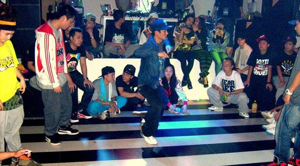

Charleston provides a wide array of social dancing experiences, each with its own unique flavor and appeal. Salsa, with its vibrant Latin rhythms, can be enjoyed at various dance clubs and events around the city. Swing dancing, characterized by its energetic and lively movements, has a dedicated following in Charleston, with venues and events catering to this style; Holy City Swing is a great resource for those looking to get involved. Jazz, deeply rooted in the city's musical heritage, is often featured in live music venues, where the smooth sounds of jazz bands create an inviting atmosphere for dancing, and the Charleston Jazz Festival is a notable highlight. Hip hop, while frequently found in nightclubs, also extends into dance classes and social settings, offering opportunities to express yourself through dynamic and contemporary movements. Charleston's social dance scene is rich and varied, providing diverse options for those looking to immerse themselves in the joy of dance.
-------------------------------------------------------------
-------------------------------------------------------------
Charleston provides a wide array of social dancing experiences, each with its own unique flavor and appeal.
Charleston's social dance scene is rich and varied, providing diverse options for those looking to immerse themselves in the joy of dance.
